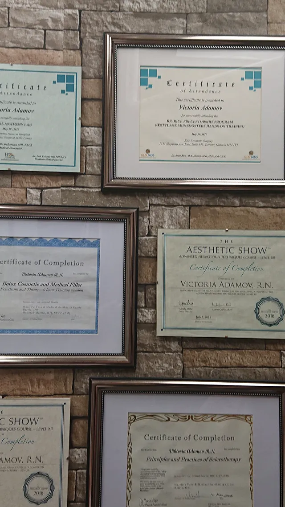

Meet Victoria Adamov, RN
Registered Nurse, Certified Advanced Cosmetic Injector, and the founder of Beauty Medical Clinic in Thornhill. More than 30 years in medicine; more than a decade teaching doctors and nurses the techniques she uses on her own clients.
From transplant ward to treatment room
Victoria started as a Registered Nurse in the bone-marrow transplantation department of one of Israel’s leading hospitals, then worked as a wound-care nurse and educator with Johnson & Johnson. After moving to Canada she earned her Registered Nurse diploma here and cared for her community as a visiting nurse for several years.
She moved into medical aesthetics more than 17 years ago, training with some of the finest dermatologists and plastic surgeons, driven by a simple wish: to help women and men look and feel their best.
A teacher of teachers
Her technique earned her a reputation as one of Canada’s top medical aesthetics trainers. For over ten years she has taught hands-on Botox, dermal filler and sclerotherapy courses for medical doctors and registered nurses, and has trained hundreds of professionals from Australia, Europe and North America. About training.
Anatomy, science and an artist’s eye
Victoria keeps up with a fast-moving field, adopting new techniques and technology so clients get the best care and outcome. Her reputation rests on one thing: a natural, youthful look built on anatomy, science and artistic skill. Many clients notice a change after just one or two visits, depending on the treatment.

Victoria’s vision
Start young, stay young.
What is the best age to think about medical aesthetics? “There’s no age limit, as long as you are 18 or older, to start looking after what you have. Every age brings its own concerns: acne and acne scars when you’re young, then enlarged pores, then wrinkles. Starting a maintenance program at the right time means it won’t be so hard to get the results you want later.”
“Invest in your skin. It will be with you, and represent you, for a very long time. Beautiful skin takes commitment, but the results are rewarding.”
“I have wonderful clients I’ve seen since they were in their thirties. They’re in their fifties now, and they look radiant. Taking a good few years off a client’s age is why I’m so passionate about what I do.”
“The goal is to age as gracefully as possible. If you start early enough, we can help delay the ageing process, and that’s something each of us deserves.”
Yours, Victoria Adamov
The difference
What clients can expect.
- 01Relationships built on trust and honesty
- 02Compassion and empathy
- 03Medical professionalism
- 04An individual approach for every face
- 05A friendly, pressure-free atmosphere
Thank you so much for assisting me right through my journey! You are a very special person.
Am very pleased with the degree of professionalism and knowledge. Exceptional results that are a combination of artistry and skill. I highly recommend Victoria and the clinic.
Victoria is a highly professional and gifted practitioner. She is honest, caring, and will always do her absolute best to give you what you are looking for.
Book a consultation
Your first step: a conversation.
Every treatment starts with a conversation. Call, text or WhatsApp, or send a note and Victoria will be in touch.